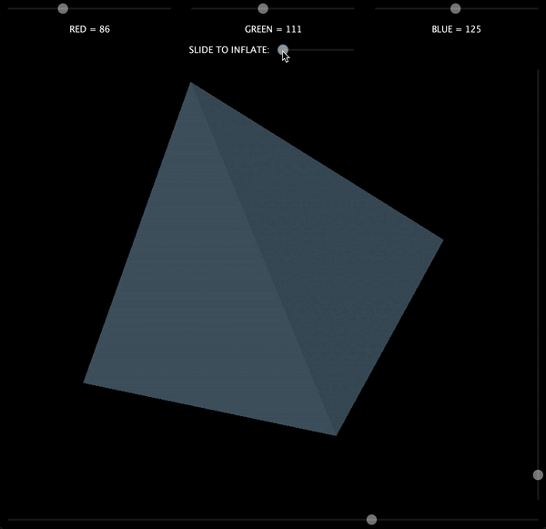

Projects

3D Render Engine
Java (Java Swing)
This engine generates the visualization of a tetrahedron in 3D space. Users can use sliders to adjust the color and rotation of the object. Users can also use an "inflate" feature to create sphere approximations from the initial tetrahedron.GitHub